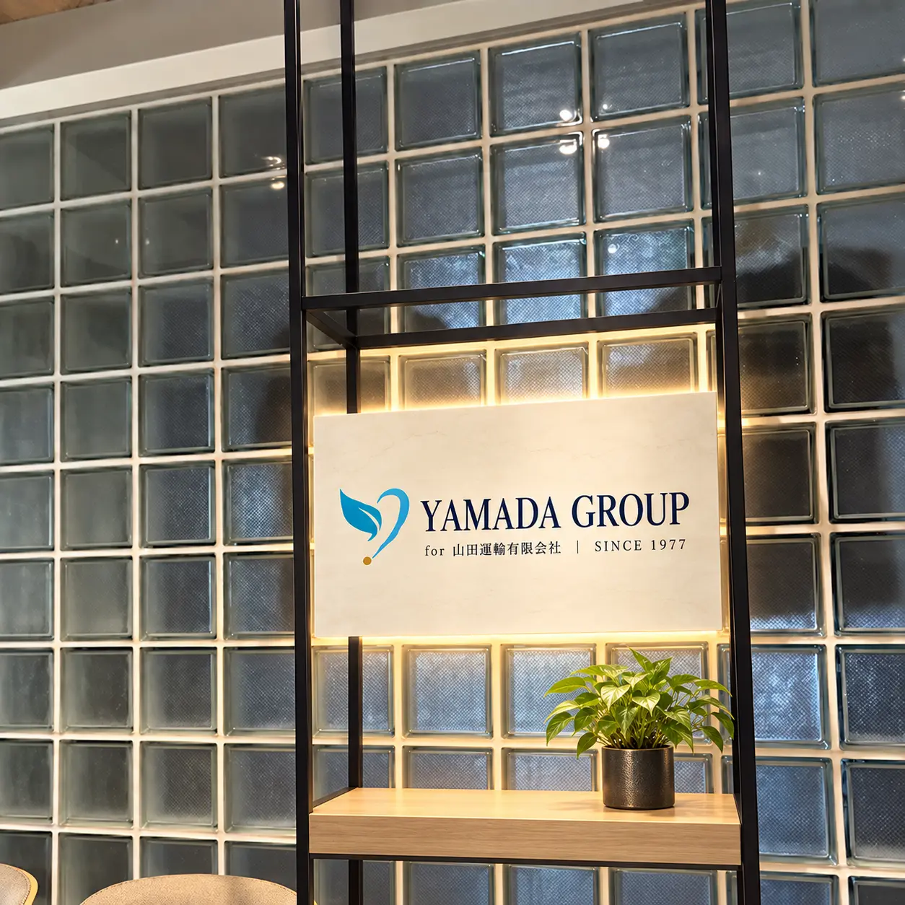

01
LOGISTICS
50年の現場力で、物流を止めない。
定期配送・スポット配送・倉庫保管から、首都圏の多様な輸送ニーズまで。グループ100名の体制と50台の保有車両で支えます。
物流事業を見る →OUR ACTION
運ぶ会社だからこそ、つなげられるものがある。山田運輸は事業の枠を越えて、未来につながる取り組みを進めています。
LOGISTICS
定期配送・スポット配送・倉庫保管から、首都圏の多様な輸送ニーズまで。グループ100名の体制と50台の保有車両で支えます。
物流事業を見る →OFFICE SOLUTION
移転・家具・レイアウト・施工・廃棄から、業務アウトソーシングまで、企業活動をまるごと支えます。
まるっとシリーズを見る ↗
GROUP SOLUTION
事務機・オフィスレイアウトから、Web制作・採用支援・SNS・営業支援まで。グループ各社の専門力を組み合わせ、企業の成長を一気通貫で支えます。
株式会社B.のサイトを見る ↗SERVICE
現場を知っているから、机上の提案で終わらない。物流を軸に、企業の課題をワンストップで解決します。
YAMADA GROUP / SCALE
物流を起点に、オフィスと企業支援へ。3つの拠点とグループの力で、現場の課題に向き合います。
CONTACT
配送・倉庫・移転・施工・廃棄・人材・ITまで、まとめてご相談いただけます。